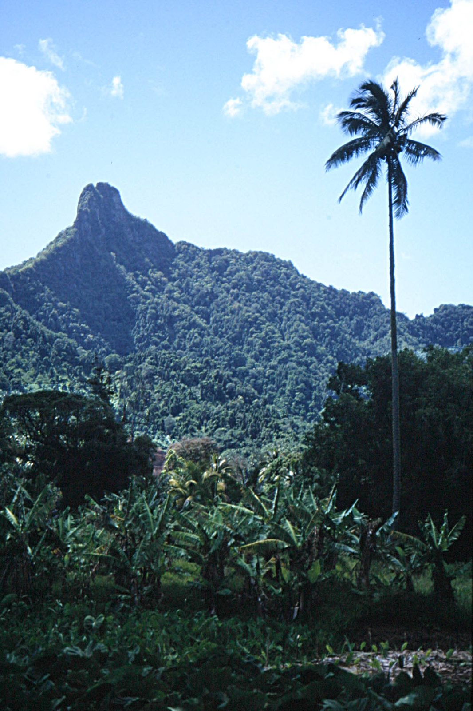
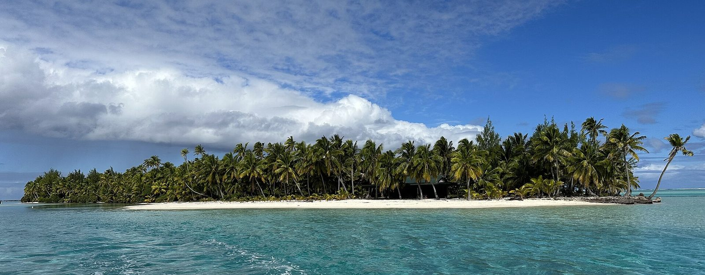
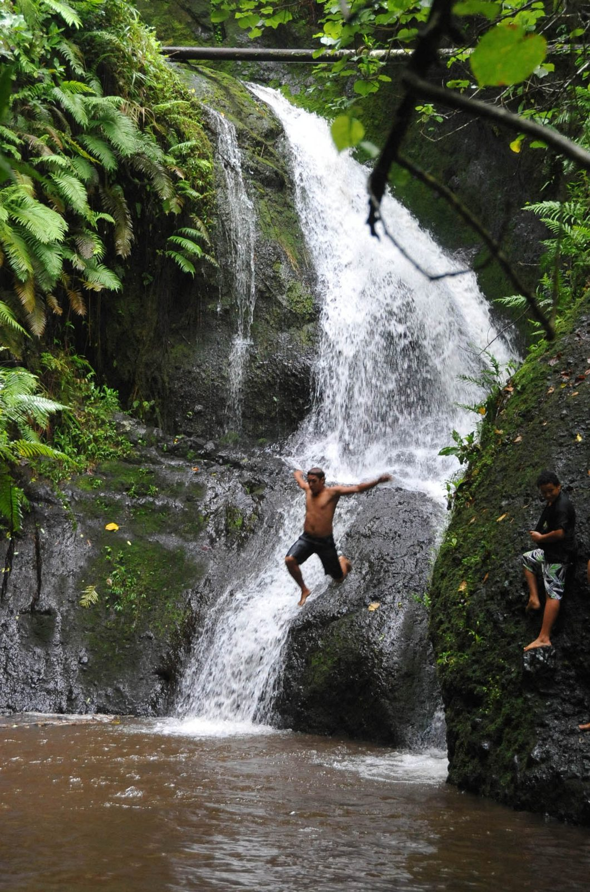
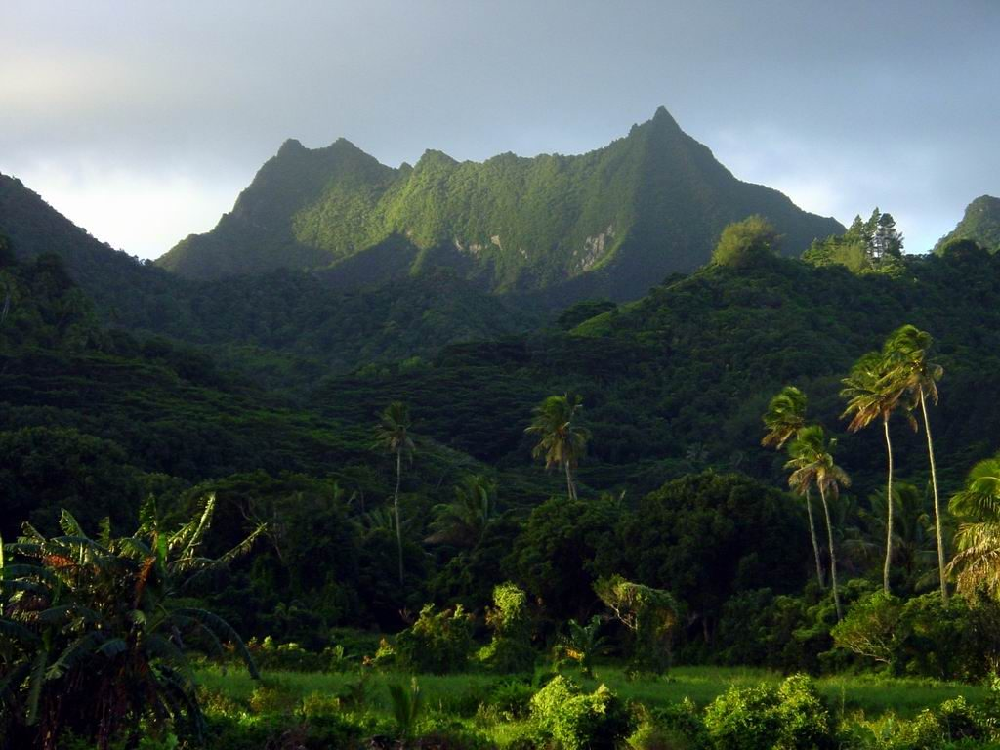
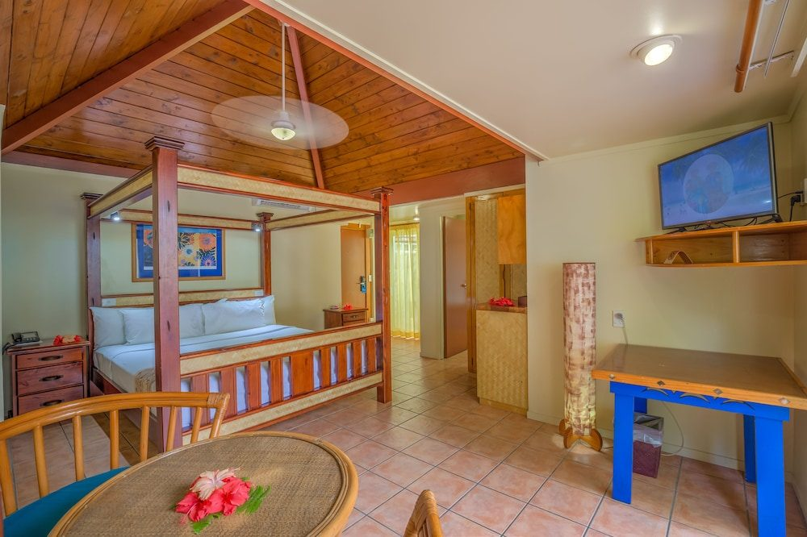

Arrive (Saturday, per the Hawaiian/Alaska schedule)
Settle into your resort near Muri Beach.
Quieter, less-developed alternative to Tahiti/Bora Bora — lagoon snorkeling, laid-back island culture, fewer resorts and crowds. Feels like a hidden gem rather than a bucket-list checkbox. The once-weekly flight fixes the trip length at 8 nights, Saturday to Sunday.


Shoulder: April–June, September–October (mild, dry).
Peak: July–August (dry season peak, coincides with Southern Hemisphere winter school holidays).
Hawaiian's Honolulu–Rarotonga flight is once weekly, so your dates aren't really a choice — they're set by the Saturday-out/Sunday-back schedule.
Eight nights at Pacific Resort Rarotonga (the island's top-rated pick, ~$600/night) runs lodging to about $4,800; the more modest Rarotongan Beach Resort (~$250/night) cuts that to roughly $2,000. Food and activities cost noticeably less here than in French Polynesia — even with the pricey full-day Aitutaki excursion built in, a realistic blended total lands around $5,500. Genuinely one of the better values on this list.
Humid but on the milder end for a South Pacific destination — this is genuinely the dry season here.
Settle into your resort near Muri Beach.
Kayaking, snorkeling, small motu islands you can wade or paddle to.

Waterfalls, local markets, small villages.
Widely considered one of the most beautiful lagoons in the world, reachable by a short flight.
Official tour: Air Rarotonga Aitutaki Day Tour ↗Muri Beach, pure relaxation.
Fly home.
#1-rated in Muri — 64 rooms/suites/villas on 5.5 beachfront acres. The splurge pick.

Aroa Beach, more budget-friendly, its own protected lagoonarium out front.
